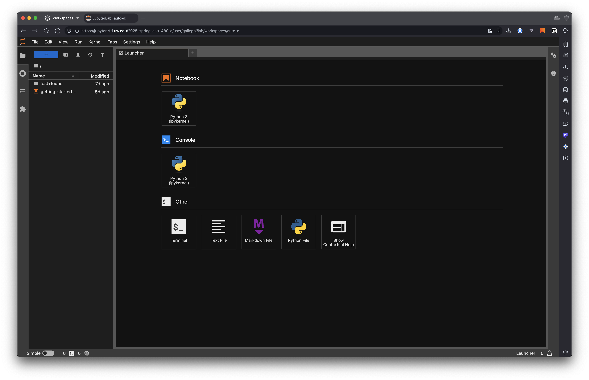
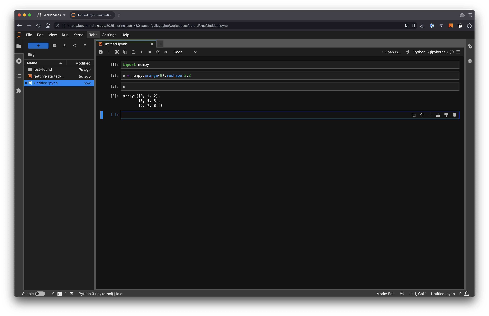

Setting up the development environment¶
ASTR 480 is a practical class where most of the analysis will be done by writing Python code. Here we will see how to set up an environment for coding that is sufficient for the purposes of this course.
The suggested environment uses the UW-IT JupyterHub service, which provides a virtual environment with a UNIX-like shell and a Jupyter notebook interface. To access it you just need a web browser regardless of the operating system of the device you are using. However, you will likely need to upload/download files from that environment, so a full operation system (i.e., not a tablet) is recommended.
While the JupyterHub service is a good option for this course, you may also want to set up your own local environment. We provide some instructions below, but note that this is an unsupported installation method and we cannot guarantee support in case of issues.
Accessing your UW-IT JupyterHub account¶
To access your JupyterHub account, go to https://jupyter.rttl.uw.edu/2025-spring-astr-480-a and log in with your UW NetID and password. After the virtual environment boots up (this may take up to a couple minutes) you should see your environment, which will look something like this:
{kind=link}
From here you can create a new notebook to quickly start coding (note that we won’t accept notebook submissions for the assignments but they are a good way to test your code, visualise data, etc.)
{kind=link}
Similarly, you can open a new UNIX terminal. Click on Other — Terminal in the launcher to open a new terminal. Under the JupyterLab interface you are running a Linux operating system (in particular Ubuntu 24.04) and you can do anything that you could do in a Linux terminal
{kind=link}
Note
Due to UW-IT restrictions it is not possible to become root/sudo in the JupyterHub environment. This means that you cannot install new packages or software. However, the environment is already set up with all the packages you will need for this course. If you feel that a package is missing, please let us know and we will add it to the environment.
Note
In this course, when we refer to “terminal” it will always mean the UNIX terminal that you can open from the JupyterHub interface or on your local computer. If we mean the “Python terminal” (where you can code interactively) we will explicitly indicate so.
Text editor¶
The JupyterHub interface comes with a built-in text editor that you can use to edit files. The editor is quite simple and doesn’t offer autocompletion, but it should be sufficient for the purposes of this class. Alternatively, you can code things in your local computer (for example using Visual Studio Code) and then upload the files to the JupyterHub environment.
Here we have created a new file called untitled1.py and added some Python code to it. Note that the code is highlighted
{kind=link}
We can now go to a terminal and run the code
$ python ~/untitled1.py
[[0 1 2]
[3 4 5]
[6 7 8]]
Hint
The ~ symbol is a shortcut for your home directory. You can use it to refer to files in your home directory without typing the full path. For example, ~/untitled1.py is equivalent to /home/jovyan/untitled1.py.
Available resources¶
Your environment comes with most of the packages and software that you’ll need for your work in ASTR 480 (a few things like DS9 and other visual tools cannot be installed in this environment, we’ll discuss those later). In particular it comes with all the command-line tools you are likely to need, including git, tar, ssh, etc. It also comes with a base Conda installation with the main packages that you will need. New notebooks use that base Conda environment. For assignments we will use virtual environments with a dedicated uv installation (which is also installed in your environment).
The container in which the environment runs has 4GB of RAM and 2 CPU cores. You can check the available resources by running the command htop from a terminal.
Hint
You will note that htop shows more CPU cores and memory than the ones available to your environment. This is because the JupyterHub server runs on a larger machine and resources for a class are shared, but you may not be able to use all the available resources.
You also have about 4.5 GB of free disk space in your home directory. You can check the available space with the command:
$ df -h ~
Filesystem Size Used Avail Use% Mounted on
/dev/sdv 4.9G 213M 4.7G 5% /home/jovyan
Note that while the user for everybody in the class is jovyan each student’s environment runs on a different, isolated container so your files will never be mixed with somebody else’s.
Restarting the environment¶
It is possible that we need to recreate the environment during the course. This may happen if we find that a tool that is not currently installed needs to be added. In that case a new Docker image will be created and JupyterHub will pull it and recreate your environment. To force the restart you can go to File — Hub Control Panel and click on Stop My Server. After this you can click on Start My Server to recreate the environment with the new image.
Your files will be preserved between restarts, however it is a good practice to back up your work before a restart. See the section below on how to do this.
Backing up your work¶
You can download any file to your local computer by right-clicking on it in the JupyterHub file browser and selecting Download. However, it is not possible to directly download an entire directory, but we can get around that by first compressing all the files in the directory.
We recommend that you store all your work in a single directory for easy access and backup. For that, open a new terminal and create a new directory with the command:
mkdir -p ~/work
(you can call this astr480 or whatever you want). You should see the directory appear in the JupyterHub file browser. Then you can create or upload files, notebooks, images, etc. in that directory.
When you want to download the entire directory, you can compress it with the command:
rm -f ~/work.tar.gz # This will remove the previous backup!
tar -czvf ~/work.tar.gz ~/work
And a new file work.tar.gz will appear in the file browser. At that point you can download it by right-clicking on it and selecting Download.
Setting up GitHub¶
GitHub is a web-based platform for version control and collaboration. It allows you to store your code in a remote repository and track changes over time. In this course, we will use GitHub (and GitHub Classroom) to provide template code and for you to submit your assignments. GitHub uses Git, a version control system that allows you to track changes in your code and collaborate with others. Git is a command-line tool, but there are also graphical interfaces available (e.g., GitHub Desktop). Throughout the course (and especially where it relates to the JupyterHub environment) we will assume that you are working using the command-line interface, but you’re welcome to use any tool you want.
We will (very minimally) discuss how to use Git in the sample assignment. Those commands are the main ones that you will need to know for this course. If you want to learn more about Git, we recommend the Learn Git Branching tutorial or the Pro Git book. And here is a good cheat sheet for Git/GitHub. We recommend that you at least familiarise yourself with the basic commands and ideas, but here are the main things you need to know:
Git tracks changes made to a directory and its contents (including subdirectories). The contents tracked by Git are called a repository or repo. A repository can be local (on your computer) or remote (e.g., on GitHub).
When a file changes, Git tracks those changes in the form of commits. A commit is a snapshot of the repository at a given time. Each commit has a unique identifier (a
hash) and a message describing the changes made.You can create branches in your repository. A branch is a separate line of development that allows you to work on different features or fixes without affecting the main codebase (usually a branch called
main). You can merge branches together when you’re ready to combine the changes.You can clone a remote repository to create a local copy on your computer. This allows you to work on the code locally and push changes back to the remote repository.
After you’ve made changes in your local clone of a repository, you can add, commit, and push those changes to the remote repository. This allows you to share your changes with others and backs up your code in case your local copy changes or gets deleted.
Our course has a GitHub organisation, where we can create repositories.
To use GitHub you need to create an account and set up your SSH keys to be able to push changes to a remote repository. First, and if you don’t have one already, sign up for a GitHub account.
Once you have an account, you need to upload your public SSH key. An SSH key is a pair of cryptographic keys that can be used to authenticate your identity when connecting to a remote server. The public key is shared with the server, while the private key is kept secret on your local machine. This allows you to securely connect to the server without needing to enter a password each time. The JupyterHub environment image has already created a pair of SSH keys for you (these are YOUR keys, each student has a different set); you can see them in the ~/.ssh directory.
$ ls -lh ~/.ssh
total 8.0K
-rw------- 1 jovyan users 2.6K Apr 1 19:38 id_rsa
-rw-rw-r-- 1 jovyan users 577 Apr 1 19:38 id_rsa.pub
The private key is id_rsa and the public key is id_rsa.pub. You can freely share the public key but you should never share your private key. You can get the contents of your public key by doing
$ cat ~/.ssh/id_rsa.pub
ssh-rsa AAAAB3NzaC1yc2EAAAADAQABAAABgQDVA2UNGLFDj+vhU4Wj2h+GgR6HlIzm6DVBc1xocP54RPt4euPwuTc1RWmdjRrXxGnDhUyAIApdbeeo5AyOv350DWHyfrE8mR2ucj66duiqT0ExDiLuAP/y+RCIpUz1Sph49ZRqVkZ5hHenWZwAND4uTl1P5A0oJvejtgYtHSwqCyQwd70DBOGhmRLCEz6lwuyA4g1z3vk3BHxtPky6mBTvPJjSu9XcTl1aL71x7upPCoWLpDcHgKtcLWzHh1ghp9czeFSnEDM7BJ6PDuBt4fn/x4esVQ7UqXTVhsP6vZH2OOn4PPn+pTsJ3H6ca/lSyI+vyjjgOwW0LT/HoVI2iCaH1dz0M7iN+izVnNP9cqB+l63ievmUGPMeHsj/oiJdTfSnaSwNMWtkf+pQVrKOeadW1ZOiREY1aOxmtTIessxPf+4VSsLsEIw3FkPisxS10klwOVcnyd80i9vMl+wImr94muiW8xksZHKkEBVHtUsa3mFfxgzaP8Z8fJNJK5gbM60= jovyan@jupyter-gallegoj
The key is the entire output, from ssh-rsa to the end, which includes your username and machine.
Now let’s add your public key to GitHub so that you can authenticate yourself when pushing changes to your repositories. To do this, go to your GitHub account settings (on the GitHub main page go to the avatar image on the top right part of the screen and click on Settings) and click on SSH and GPG keys in the left sidebar. Then click on New SSH key and paste the contents of your public key (copied from the terminal) into the Key field. You can give it a title (e.g., ASTR480 JupyterHub) and click on Add SSH key. Depending on whether you set up 2-factor authentication you may need to enter a code sent to your phone or email. This is also a good time to update your Public profile information (especially the name) so that your commits have your real name, which is useful for grading.
Now we can check that your JupyterHub environment can connect to GitHub. In the terminal, run the command:
$ ssh -T git@github.com
The authenticity of host 'github.com (140.82.116.4)' can't be established.
ED25519 key fingerprint is SHA256:+DiY3wvvV6TuJJhbpZisF/zLDA0zPMSvHdkr4UvCOqU.
This key is not known by any other names.
Are you sure you want to continue connecting (yes/no/[fingerprint])? yes
Warning: Permanently added 'github.com' (ED25519) to the list of known hosts.
Hi albireox! You've successfully authenticated, but GitHub does not provide shell access.
Note that you’ll need to type yes to the question about the authenticity of the host (this will only be necessary once). If you see a message like the one above, it means that your SSH key is correctly set up and you can now push changes to your GitHub repositories. If you see an error message, check that you added the correct public key to your GitHub.
Finally, you need to be added to the ASTR 480 GitHub organisation to have access to the assignments and other repositories. Fill out this form with your name and GitHub username (not your email address or UW NetID).
Note
Setting up a local environment
If you want to use your own computer for coding you can set up a local environment. For that you will either need a UNIX-like operating system (any Linux distribution or a macOS computer) or a Windows computer with WSL installed. The instructions below are for a UNIX-like operating system, but they should work on WSL as well. We assume a Debian/Ubuntu-like system, but the instructions should be similar for other distributions; you may need to change the commands used for the package manager.
Installing packages
The following packages are likely required for the course.
sudo apt install build-essential git vim
If you are using a macOS computer, you can install the packages using Homebrew:
brew install git vim curl
Installing Python¶
You can use any Python 3.12 installation that you prefer. Both macOS and most Linux distros come with Python packages that are likely to work well for the purposes of this course. Another option may be installing Miniconda. For the assignments we will assume that you are using uv for dependency management and virtual environments. The installation instructions are available here. In general you can install uv with the command:
curl -LsSf https://astral.sh/uv/install.sh | sh
You can then create a general virtual environment for testing (each assignment will have its own virtual environment) with the commands:
uv venv --python 3.12 ~/astr-480-env
which will download Python 3.12 if necessary. Then you can activate the environment with:
source ~/astr-480-env/bin/activate
and deactivate it with deactivate. Once the environment is active you can install new Python libraries with uv pip install, for example
uv pip install numpy matplotlib astropy ipython
and run code, for example
$ python -c 'import numpy; print(numpy.arange(9).reshape(3,3))'
[[0 1 2]
[3 4 5]
[6 7 8]]
Set up Git and GitHub¶
First, check that git is indeed installed by running the command:
$ git --version
git version 2.34.1
(your version may be different but make sure it’s at least git 2.x). If you don’t have an SSH key pair you’ll need to create one with
mkdir -p ~/.ssh
chmod 700 ~/.ssh
if [ ! -f ~/.ssh/id_rsa ]; then
ssh-keygen -q -t rsa -N '' -f ~/.ssh/id_rsa <<<y >/dev/null 2>&1
echo "SSH key created."
fi
chmod 600 ~/.ssh/id_rsa
Then follow the instructions above to upload your public key to GitHub.
SAO DS9¶
We will use DS9 for FITS file visualisation. You can download it from the SAO website for your operating system.
Next steps¶
If you are able to access your coding environment (or have set up a local one) you are ready to attempt the introductory assignment to check that everything is working correctly.